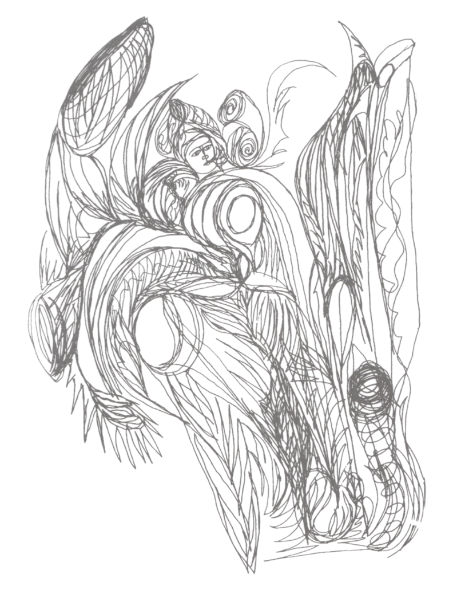
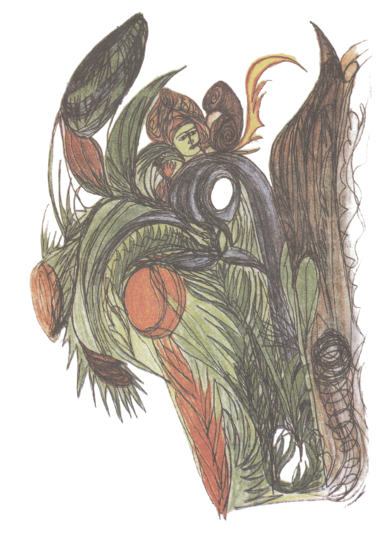

МПП Тесты — практическое пособие
Аннотация
Это первое доступное практическое пособие по использованию инновационной технологии новой Альтернативной Психологии. Тесты очень гармонично сочетают лечебный и педагогический эффект. Они диагностируют метаморфозы психики на ранних этапах, помогают оперативному снятию стрессов, развитию психологического иммунитета человека, помогают в воспитании подрастающего поколения, а также способствуют развитию творческих способностей детей и взрослых. Пособие содержит краткое объяснение принципов психографии, методические рекомендации по использованию медико-педагого-психологических тестов, пример выполненного теста, а также 3 комплекта тестов для раскрашивания.
В основе метода лежит принцип психологической проекции. Новизна и особенности медико-педагого-психологических тестов состоят в объединении и использовании нескольких групп проективных методик. Это позволяет проводить одновременно диагностику, коррекцию, а также способствует совершенствованию личности через метаморфозы психической энергии и расширение сознания.
Пособие предназначено для детей и взрослых.
Введение
Новая Альтернативная Психология создана Я.С. Ибадовым в период с 1990 по 1998 г.г. Она изучает психику личности, как информсистему, связанную с Вселенной и создает базовую информационную основу для изучения человека, опираясь на голографический образ биоэнергетическую матрицу, в которой содержится программа здоровья каждого индивида. Одним из методов новой науки являются медико-педагого-психологические (МПП) тесты в форме абстрактных композиций. Эти тесты были получены Я.С. Ибадовым в процессе медитативного рисования в 1999 г., в период работы в Институте проблем образования Республики Азейбарджан. Свойство тестов в следующем: каждый тест нарисованный единомоментно, не отрывая руку от листа бумаги, содержит гармоничные линии, способствующие выводу негативной энергии и трансформации накопленной избыточной психической энергии в творческую энергию.
В 2001 году по запросу Министерства здравоохранения Азейбарджана и с согласия Министерства образования, тесты были применены для психологической реабилитации детей, перенесших стресс после ноябрьского землетрясения 2000 г. Как показала практика, тесты очень гармонично сочетают лечебный и педагогический эффект. С одной стороны, тесты диагностируют метаморфозы психики на ранних этапах, помогают оперативному снятию стрессов, восстановлению и развитию психологического иммунитета человека, улучшают процесс адаптации. Это происходит за счет усиления деятельности органов чувств и ускорения ответных реакций. С другой стороны, тесты способствуют развитию творческих способностей тестируемых.
В педагогике и воспитании юного поколения медико-педагого-психологические тесты применяются в развивающем подходе. Эти тесты были опубликованы в 1999-м году. По рекомендации Министерства Образования Азербайджанской Республики использованы те рисунки, которые были получены методом психографии. Они имеют важное значение как наглядные пособия, для развития способностей молодого поколения к более высокому уровню мышления. Использование тестов наряду с тренировкой мышления человека помогает формировать образное мышление, определенные навыки и особенности идеационной работы. Тема о применении этих тестов получила диплом первой степени Министерства образования Азербайджана на республиканском конкурсе научных докладов учителей в 2001 году.
Пособие предназначено для практического освоения методов психографии слушателями Школы Альтернативной психологии на занятиях под руководством преподавателя, а также при самостоятельном использовании.
1. Научное раскрытие абстрактных композиций
"Наш священный долг и наивысшая цель растить для нашего общества физически здоровую, духовно богатую, сильную верой молодежь". Г.А. Алиев
За свои жизненные удачи человек должен быть благодарен своей воле. А воля связана с верой. Люди, не имеющие веры, не бывают преданными ни обществу, которому принадлежат, ни религии, которой служат, ни организации, членом которой являются. В воспитании глубокой веры, сильной воли есть роль и влияние психологических тестов. Подобные тесты, вызывая интерес у подростков и молодых людей, формируют в них личностные качества. С другой стороны эти тесты в виде абстрактных композиций играют важную роль в выявлении подсознательного, субсознательного или же "шестого чувства".
Исследование рисунков, состоящих из абстрактных композиций в форме психологических тестов и анализ результатов работы с ними, путем конкурса типа соревнования повышает психологическую деятельность молодежи.
Разнообразие, богатство и покоряющая красота человеческой природы связаны с безграничным стремлением его творческого вкуса. В некоторых случаях эмоциональным стрессовым состояниям ставит конец творческая энергия. Поле деятельности творческой энергии может быть направлено на различные области организма.
Затрата творческой энергии также осуществляется на фоне духовной потребности. Так, шахматисты при затрате своей творческой энергии принимают во внимание все особенности психологического регулирования. И это оказывает им существенную помощь для использования в нужной степени их интеллектуальных возможностей.
Художественная и научно-творческая энергия оказывают влияние и на другие сферы деятельности человека. Для таких людей затрата энергии иногда превращается в обязательную и принудительную проблему. Поэтому важен выход этой энергии из организма и направление ее в необходимую сферу. Конечно, есть различные способы выхода этой энергии из организма.
Одной из проблем в этой области является проблема, связанная с распределением избыточной энергии в организме. Но куда же направлять эту избыточную энергию? Великий австрийский психиатр 3.Фрейд в своих работах постарался дать ответ на этот вопрос. Конечно, для общего развития индивида вопрос "Куда направлять энергию?" является характерным. Это охватывает всю его социальную деятельность и индивидуальные способности. Актуальность вопроса о верном направлении и затрате энергии заключается в том, что это влияет и на биологические факторы поведения и здоровья человека. Независимо от социально-психологических сторон этого вопроса энергия все равно растрачивается, однако ее верная направленность в результате бывает еще более плодотворной и полезной. С этой точки зрения затрата психологической энергии с помощью абстрактных рисунков, влияя на формирование Дополнительного сознания и направленность на еще лучшее духовное развитие, помогает открытию "шестого чувства".
Вышеуказанные особенности явно выступают в сенситивных возрастных периодах у детей. Чтобы освоить эти особенности и навыки в приемлемых условиях необходимо наиболее выгодно использовать эти периоды. Значит, если в сенситивных возрастных периодах учитывать правильное направление энергии в определенные сферы, можно добиться более полезных результатов. К вопросу "куда направлять энергию?" должным образом должны относится и родители, тоже создавая соответствующие возможности и условия, способствующие интеллектуальному и биологическому развитию молодого поколения. В рамках этих возможностей также правильно должна быть распределена затрата энергии при обучении.
Человек рождается как источник энергии. Накопление энергии и система распределенная совпадают с биологическим развитием организма и полностью охватывают факторы его формирования. Поэтому первый этап формирования и накопления энергии можно характеризовать появлением на свет индивида. Развитие индивида начинается с ненормальной затраты энергии.
Появление половых возрастных особенностей приводит к изменениям в организме и активизирует накопление психической энергии. Таким образом, начинается второй этап формирования психической энергии.
Кризис, начинающийся в подростковом периоде с появлением возрастных половых особенностей, еще более социализируется и уже основывается на общественных отношениях. Так, начинается третий этап формирования психической энергии. Во время третьего этапа кризис, связанный с энергией подросткового периода завершается появлением творческой энергии.
Область распределения творческой энергии и формы ее проявления делятся на три группы:
- научно-творческая энергия;
- художественно-творческая энергия;
- творческая энергия, связанная с общественной деятельностью.
Научно-творческая энергия отличается своей точностью и активностью и основывается на интеллектуальных мыслительных качествах. Гибкость ума и интеллектуальная восприимчивость являются одним из основных факторов затраты этой энергии. При занятии научным творчеством требуется очень активная интеллектуальная восприимчивость, и время затраты энергии бывает очень коротким. Это значит, что энергия быстро растрачивается, так как биофизические органы, вырабатывающие её, очень быстро устают и ослабевают. А это закономерный процесс.
В отличие от предыдущего, художественно-творческая энергия больше основывается на умственном восприятии и художественной фантазии. А причина этого заключается в богатстве и разнообразии, которые представляют для психологии человека нормы художественного творчества. Поэтому занимаясь художественным творчеством затрата энергии протекает постепенно и в это время, абсолютно отличаясь от научно-творческой деятельности, не происходит утомление мозга, а наоборот, за счет постепенной нейтрализации избыточной энергии эмоциональная и психическая напряженность исчезают.
Использование психологических тестов также помогают усилению психологической защиты человека. Происходит это из-за того, что процесс работы с этими тестами усиливает деятельность органов чувств, ускоряет способность человека к быстрой реакции воспринимать услышанное и готовность ответить на любые вопросы, а также повышает культуру речи, так как увеличивает эстетическое восприятие. А это, в свою очередь, помогает им вырасти добронравными и мягкими людьми на фоне веры в себя и самоконтроля.
Не случайно, если проследить за судьбой людей, занятых художественным творчеством, можно увидеть, что большинство из них проходят очень интересный жизненный путь и выглядят очень здоровыми. Это объясняется тем, что большую часть творческого периода своей будущей жизни они занимаются именно художественным творчеством. Подобный образ жизни из-за связи с эстетическим восприятием создает условия и, естественно, еще более усиливает любовь к жизни. Мы советуем прямо сейчас начать раскрывать в своих детях такие способности, путём работы с МПП тестами.
2. Лечебное значение психологических тестов
Еще лучшее понимание прекрасных чувств и красоты является самым сильным фактором, способным укрепить здоровье. Искусство, эстетика и связь медицины, а также возникающая в их рамках эстетотерапия наряду с положительным влиянем искусства на здоровье человека, доставление художественно-эстетического удовольствия, также следует и выявляет пути исследования проблем, связанных со вспомогательным терапевтическим методом. В целом, медицинская наука, являющаяся наукой о здоровье, не довольствуется лишь следованием внутренней сути здоровья, она также изучает и особенности внешних показателей и ее психологических особенностей. Для этого используются все новые и новые пути и методы. Объективные факторы и неразрывные нити, связывающие эстетику с медициной, медицину с искусством объясняются тем, что их непосредственным объектом является человек и его жизнь. И медицинская наука борется именно за здоровую жизнь и служит жизни. жизнь в широком смысле является самой великой красотой.
Поиск элементов в абстрактных рисунках повышает зоркость зрения, увеличивает поле зрения и усиливает зрительную память. Предоставление молодым людям возможности самостоятельного раскрашивания рисунков увеличивает их способность к восприятию цвета, процесс перенесения на рисунок природных цветов приводит к усилению зрительной памяти. А если учитывать лечебные свойства цвета, то при решении тестов в процессе раскрашивания происходит также и лечебный процесс. Например, успокаивающее действие зеленого цвета она зрительный апарат и нервную систему приводит к устранению усталости зрения и умственного утомления. Или же, например, желтый цвет дает организму, особенно почкам тепло. Можно привести еще множество подобных примеров. Что касается основной цели, по она заключается в том, чтобы в процессе выбора цветов при решении тестовых выявить психологические способности молодежи. При повторном сравнении правильно раскрашенных образцов тестов у молодых людей выявляется способность правильного выбора цветов.
При рассмотрении тестов с различных интервалов происходит еще одно лечебное воздействие, помогающее устранить усталость и утомляемость глаз и нервной системы.
Духовная сторона восприятия и чувства интереса, вызываемые тестами, могут предотвратить частое и длительное времепревождение перед телевизором или бессмысленными компьютерными играми. А это, в свою очередь, доказывает отсутствие необходимости в медицинском показателе равном двум часам перерыва с целью стабилизации отрицательного воздействия на раздробление витамина "A" в течение всего лишь одного часа времени, проведенного перед телевизионным экраном или монитором компьютера.
3. Правила пользования психологическими тестами
Для того, чтобы понять нарисованные композиции, прочувствовать их, осознать, в первую очередь на них необходимо посмотреть очень внимательно, творческим взглядом, с различных ракурсов и расстояний. Поиски смысла образов, их анализ и определение схожести проводится сначала письменно и является первым этапом работы над тестами. Раскрашивание найденных элементов является вторым этапом. На этом этапе предоставляется самостоятельность. Однако процесс раскрашивания должен осуществляться так, чтобы не испортить ясность образа и смысла других элементов. Наоборот, процесс раскрашивания должен принести предыдущему устному процессу восприятия наибольшую ясность. Во время третьего этапа необходимо в письменном виде изложить видимые элементы, образы, смыслы и сходства, а также литературным языком описать и их художественно-философское восприятие.
Есть такие дети, которые не могут говорить. И есть такие, которые не могут писать. В настоящее время с помощью тестов, которые состоят из разных графических методов Психологии, невозможно проверят детей, не умеющих писать. Потому что, при проверке по тестам-рисункам пациент должен что-то писать или рисовать. Именно метод Психографии дает нам большие возможности в поиске путей в организации воспитания по линии обучения немых, безруких или же не умеющих держать ручку детей, всех олигофренических детей, в психике у которых имеются нарушения и которые умственно недоразвиты. Потому что такие дети встречаются нередко. Во всех уголках мира есть такие дети. Это является всеобщим горем Земного шара и всего человечества. Именно этот слой населения нуждается в том, чтобы работы по их обучению и воспитанию были правильно организованы.
В настоящее время мы можем изучать психологическую деятельность таких детей в информации, которая содержится в их психической энергии, что способствует правильной организации системы образования и воспитания таковых и эту возможность дает нам метод Психографии Альтернативной Психологии.
4. Пример работы с тестом
Предлагаем вашему вниманию один пример из этих тестов.
Часть первая теста. Цветное графическое представление.


Вторая часть теста.
Изложение тестов литературным языком в виде стихотворения, как художественно-философское восприятие.
Снизу вверх стрелою устремленный, Вот он, виден колос золотой, Каждым нервом к Солнцу вознесенный, Хоть и полновесный, налитой. Справа кто-то с обликом тоскливым С ниспадающими до чела Прядями зелеными, раскинув Руки, как два ангельских крыла. Левое крыло, оно, что птица, Что головушку воздело ввысь, Над крылом другим же смерч вихрится, Ласки глаз пронзающий - страшись! Странной философией и смыслом Все пронизано, загадка в том, Что неравновесным коромыслом Крылья: жажда жизни есть в одном. Жаждой жизни новой, Солнца выше, Бьется сердце, но крыла, увы, Не распрямить, коль под ними свищет Бедствие - не ветер синевы. Но вот выше человек, как просто - Он ведь призван жизнь всю оградить, Только справа меч обоюдоострый Брошен – что же будет впереди? Аромат цветка в руке вдыхает Человек, как в забытье, весной, Но печалью небо оглашает Нежная свирель в руке другой. К помощи Всевышнего взывает И тюльпана нежного бутон, С правой стороны напоминает Шар земной в узорах жухлых он. Изуродован рельеф планеты Бедствиями, чуда ждет она, Беззащитна, как бутон, как дети, Верит все ж, что будет спасена. (Перевод Маиса Гаджиева)
Заключение
В настоящее время МПП тесты используются Школой Альтернативной Психологии в городах Баку, Волгограде, Москве, Севастополе, Симферополе, в Медицинском Центре по обслуживанию депортированных народов г. Симферополь, Центре психологической помощи «Путь к себе» г. Керчь. Накоплен значительный опыт.
Преимущество МПП тестов, заключается в том, что их можно использовать для самодиагностики и самокоррекции, т. е. для внутренней работы над собой. Человек может сам себе оказать психологическую помощь на этапе преморбидного состояния (предболезни), когда Причина не дошла до физического тела, но уже проявилась в эфирном теле, в виде плохого настроения, синдрома хронической усталости, повышенной нервно-эмоциональной возбудимости и т. д.
В результате работы с МПП тестами испытуемые отмечали улучшения по следующим показателям: снизились эмоциональная неустойчивость, раздражительность, исчезло состояние повышенной утомляемости, улучшился сон. Осознание доминирующей эмоции присутствующей в состоянии эмоциональной напряженности такой, как страх, агрессия, обида, тревожность, вина, предоставило возможность самим испытуемым трансформировать ее при повторном тестировании через определенный промежуток времени. Испытуемые наблюдают улучшение взаимоотношений в семье, на работе, т. е. повысился личностный адаптационный потенциал.
Кроме выработки адаптивного поведения (осознаваемого, гибкого, активного, включающего в себя произвольный выбор), работа с тестами помогает развитию и совершенствованию личности, повышению самооценки, развитию творческого потенциала.
Педагоги, сталкиваясь с проблемой распределения избыточной энергии в детском организме отметили, что, работая с МПП тестами, избыточная психическая энергия у подростков трансформируется в творческую, сокращается время провождения перед телевизором и компьютером. Педагоги музыкальной школы наблюдают раскрытие музыкальных способностей у детей, раскрашивающих абстрактные композиции. Научные работники, используя МПП тесты в качестве релаксационных, отмечают, что во время рисования устраняется утомляемость глаз, слуха, нервной системы, увеличивается работоспособность, повышается креативность.
Критериями позитивных изменений при повторном тестировании являются:
- увеличение количества позитивных образов в рисунках, например белых птиц, символизирующих духовный рост;
- увеличение диапазона используемых цветов и их интенсивность (рисунок становится ярким и многоцветным), характеризующих активную жизненную позицию;
- преобладание гармоничного сочетания цвета, что свидетельствует о балансе Иньской и Яньской энергии;
- в рисунках отмечается аккуратность, вырабатывается индивидуальная техника раскрашивания;
- глубина проработки существующей проблемы, выраженная в литературном описании или стихотворении, свидетельствует о завершенном этапе внутренней работы.
На основе результатов практического применения МПП тестов, можно сделать следующие выводы.
- МПП тесты Я.С.Ибадова - инструмент познания себя и окружающей реальности.
- При использовании МПП тестов у человека развиваются все виды мышления: наглядно-образное мышление при рисовании; словесно-логическое при словесном представлении содержания того же рисунка в прозе и абстрактное мышление, когда сочиняем стихи на тему рисунка.
- Результатом работы слушателя с тестами является гармонизация его личности: коррекция эмоциональной сферы, пробуждение радости творчества, умиротворенность, повышение самооценки. Совершенствуя себя, мы совершенствуем окружающий мир.
Об авторе
Доктор медико-биологических наук, профессор Ибадов Яшар Садай оглы основатель научной Школы Альтернативной Психологии, ведет активную работу по подготовке специалистов-психографов в крупных городах Азербайджана, России, Украины, в других странах СНГ и дальнего зарубежья.
В 2005 году под руководством профессора Я. С. Ибадова в г. Баку создана специализированная школа «Художник-целитель» с целью воспитания здоровой талантливой молодежи, развития у детей и подростков способностей к художественному творчеству, а также для подготовки художников-целителей, способных проводить работу по психодиагностике и коррекции на основе новой методологии.
По материалам диссертаций опубликовано 28 работ на русском и азербайджанском языках, в том числе монография «Психография как метод всестороннего развития новой личности». В ходе научных исследований и практического применения методов Альтернативной Психологии разработан «Способ Я. Ибадова энергоинформационной диагностики и лечения», позволяющий гармонизировать психическое состояние человека и адаптировать его к постоянно изменяющимся условиям окружающей среды. На изобретение получен Евразийский патент за No 006449 от 29 декабря 2005 г. Комиссией Всемирного салона изобретений, инноваций и исследований «Эврика» (Бельгия) новое изобретение отмечено дипломом и орденом «Шевалье» (2004 г.), орденом и дипломом «Почетный Командор» и золотой медалью с отличием (2005 г.).
Профессор Я. С. Ибадов является действительным членом Международного регистра комплементарной медицины Россия, г. Москва), членом Международной профессиональной ассоциации специалистов комплементарной медицины, психологов и целителей (Россия, г. Москва). За практические достижения в области традиционной народной медицины награжден дипломом и золотым знаком «Элита» Всероссийского научно-исследовательского центра традиционной народной медицины «ЭНИОМ» (2005 г.).
В 2008 г. профессор Я. С. Ибадов открыл Бакинский филиал Московского гуманитарно-экономического института и является его ректором.
Литература
Яшар Ибадов. Психография как метод всестороннего развития новой личности. - Тюмень: Издательство «Истина», 2007.